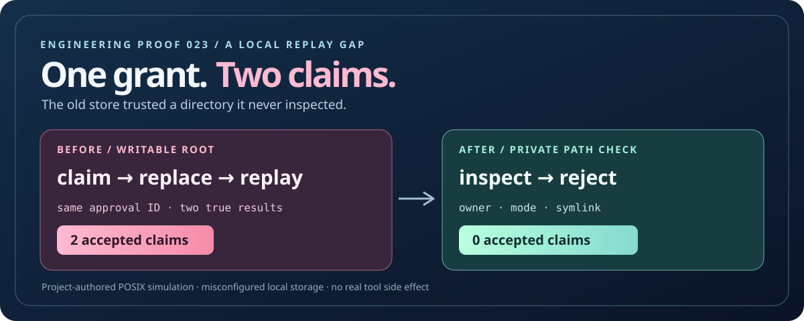

BEFORE / HISTORICAL MODULE
Loading…
RECORDED RESULT
—
A one-use approval is only as strong as the place that remembers it was used. The earlier ĀML file store trusted a path without verifying it: a writable root let a local actor replace the claim directory and reuse the same grant. The hardened store rejects weak storage before dispatch.
This is a project-maintained POSIX filesystem simulation under a deliberately misconfigured store. It does not show a second operating-system user, actual malicious access, authenticated human consent, a network filesystem, or a real tool side effect.

The diagram shows the writable-root case. The four recorded before/after scenarios and exact results are below.
Choose a filesystem state. The left panel runs the exact old module preserved from the prior commit; the right panel runs the corrected module.
Reading report.
—
—
One command runs the exact old source fixture and the fixed store in separate fresh directories, then compares the output with this checked-in report.
node scripts/build-grant-directory-report.mjs --checkHistorical fixture SHA-256: Loading…
The stored Git blob is matched to the pre-fix source.
Node’s recursive mkdir behavior permits an existing directory without correcting its mode. This guard checks the state that actually exists. Keep the path stable, private, local, and under host control; same-user mutation and cross-machine stores need stronger designs.